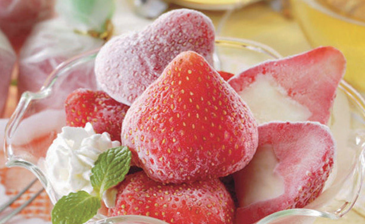

Desserts
After the main course comes the dessert. Generally, dessert refers to the sweet or sugar-contained food served after the main course, such as cookies, pastries, candies, pudding, cakes, ice cream, fruit, yogurt, etc.
The utensil used for desserts, in some areas, is called the dessert spoon particularly designed for desserts. Other possible options are forks and teaspoons. The use of dessert spoons varies, as sometimes they are used for soup or cereals. A dessert spoon is unique in terms of the size, shape, and capacity.
